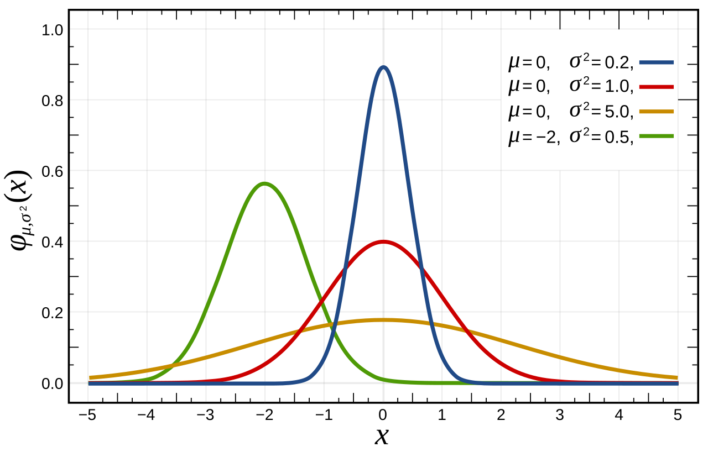
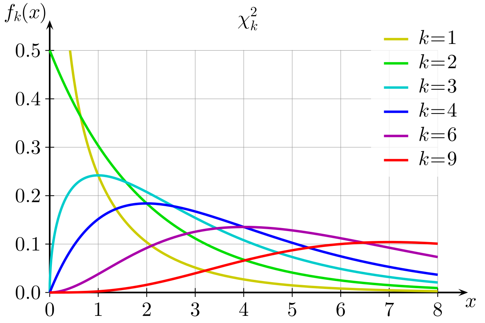

Statistik 2: Formelblad
Kommentar till formlerna
- Ni ska inte lära er dessa utantill
- Ni kommer att använda endast ett fåtal av dessa formler för manuella beräkningar på datalabbar och examinationen
- Vi kommer dock att referera till samtliga formler i syfte att nå en så god förståelse som möjligt för deras bakomliggande statistiska begrepp och hur dom tillämpas inom t.ex. logopedi
- Detta formelblad fokuserar i första hand på formler applicerbara på kontinuerliga slumpvariabler
Deskriptiv statistik, 1 variabel
Stickprovsmedelvärde
\(\bar{x}=\frac{\sum_{i=1}^{n} x_i}{n}\)
Stickprovsvarians
\(s_x^2=\frac{\sum_{i=1}^{n}(x_i-\bar{x})^2}{n-1}\)
Stickprovsstandardavvikelse
\(s_x=\sqrt{s_x^2}\)
Standardisering stickprov (z)
\(z=\frac{x-\bar{x}}{s_x}\)
Deskriptiv statistik: 2 variabler
Stickprovskovarians
\(s_{xy}=Cov(x,y)=\frac{\sum_{i=1}^{n}(x_i-\bar{x})(y_i-\bar{y})}{n-1}\)
Notera alternativ formel för stickprovsvarians:
\(s_{xx}=Var(x,x)=\frac{\sum_{i=1}^{n}(x_i-\bar{x})(x_i-\bar{x})}{n-1}\)
(jfr med motsv. formel för 1 variabel)
Stickprovskorrelation
\(r_{xy}=Corr(x,y)=\frac{s_{xy}}{s_xs_y}=\frac{\sum_{alla~ data}z_xz_y}{n-1}\)
Centrala gränsvärdessatsen
Central Limit Theorem
Förenklat uttryck: Om vi tar medelvärdet från ett tillräckligt stort antal stickprov kommer dessa medelvärden att approximera en normalfördelning. Detta gäller oavsett vilken fördelning de individuella stickproven har!
Approximationen kan anses vara tillräckligt bra om 𝑛 ≥ 30.
För regression gäller generellt att approximationen är tillräckligt bra om 𝑛 − 𝑘 − 1 ≥ 30, där 𝑘= antalet förklarande variabler)
Enkel linjär regression
Populationsmodell
\(\Upsilon=\beta_0+\beta_1x_{1,i}+\epsilon_i\) \(~~\) där \(~~\) \(\epsilon\mathop{\sim}\limits^{iid}{N}(0,\sigma_\epsilon)\)
Skattad modell
\(\hat{y}=b_0+b_1x\)
Skattning av parametrar:
Lutningen: \(~b_1=\frac{s_{xy}}{s_x^2}=r_{xy}~\cdot~\frac{s_y}{s_x}\)
Interceptet: \(~b_0=\bar{y}-b_1\bar{x}\)
Multipel linjär regression
(notera att k = 1 blir enkel regression)
Populationsmodell
\(\Upsilon_i=\beta_0+\beta_1x_{1,i}+...+\beta_kx_{k,i}+\epsilon_i\) \(~~\) där \(~~\) \(\epsilon\mathop{\sim}\limits^{iid}{N}(0,\sigma_\epsilon)\)
Skattad regressionsmodell
\(\hat{y}=b_0+b_1x_1+b_2x_2+...b_kx_k\)
Skattning av parametrar i MR ges av teknologi (krångliga formler)
Normalfördelning med standardisering
Teori:
\(f(x)=\frac{1}{\sigma\sqrt{2\pi}}e^{-\frac{(x-\mu)^{2}}{2\sigma^{2}}}\)
\(X\sim\mathcal{N}(\mu,\sigma)\)
\(E(X)=\mu\)
\(Var(X)=\sigma^2\)
Standardisering:
\(Z=\frac{X-\mu}{\mu}\sim{N}(0,1)\)
där \(Z\) är kritiskt värde
Normalkurvan

Student t-fördelning
\(X\sim t(v)\)
där \(t\) är kritiskt värde och \(v\) är antalet frihetsgrader

\(\chi^2\)-fördelning
\(X\sim\chi^2(v)\)
där \(v\) är antalet frihetsgrader

Inferens för population
Teststatistika med känd varians
\(Z=\frac{\bar{X}-\mu_0}{\sigma/\sqrt{n}}\)
Teststatistika med okänd varians
\(T=\frac{\bar{X}-\mu_0}{s_x/\sqrt{n}}\)
Konfidensintervall väntevärde med känd varians
\(\bar{x}\pm z_{\alpha/2}\cdot\frac{\sigma}{\sqrt{n}}\)
Konfidensintervall väntevärde med okänd varians
\(\bar{x}\pm t_{\alpha/2, n-1}\cdot\frac{s_x}{\sqrt{n}}\)
Inferens: Jämföra två oberoende grupper
Teststatistika
\(T=\frac{\bar{X_1}-{\bar{X_0}}}{\sqrt{\frac{s^2_1}{n_1}+\frac{s^2_0}{n_0}}}\)
Frihetsgraderna i en t-fördelning ges av teknologi (krångliga formler)
Inferens: Jämföra två beroende grupper
Data som differenser
Teststatistika för parade data
\(T=\frac{\bar{D}}{S_D/\sqrt{n}}\)
Inferens: \(\chi^2\)
Teststatistika
\(\chi^2=\sum\limits_{Alla~celler}\frac{(Obs-Exp)^2}{Exp}\)
Frihetsgrader för goodness-of-fit
\(v=k-1\)
där k är antal celler i tabellen
Frihetsgrader för test av oberoende
\(v=(C-1)\cdot(R-1)\)
där C är antal kolumner och R är antal rader